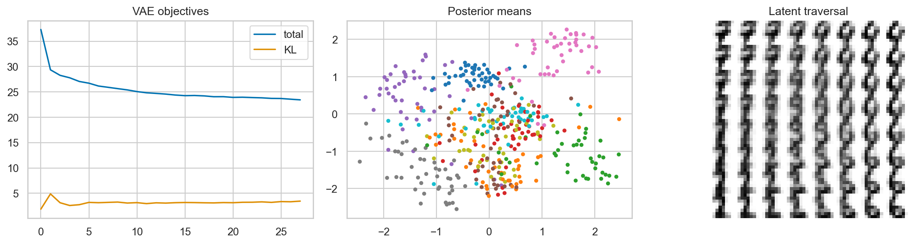

ML Hands-on Lab · 09 — Neural networks
Variational autoencoders
1. The decision and the mechanism
A variational autoencoder learns both how to reconstruct an input and how to organize its uncertain latent code near a simple sampling distribution. The reconstruction term preserves information; the KL term limits how much input-specific information the latent distribution carries.
This lesson includes the mechanism, a hand-worked example, and the experiment design. The paired notebook contains the complete runnable setup and produces the diagnostic figure below.
2. Work a small example
An ordinary autoencoder returns one code. This VAE encoder returns a mean and log variance for each of two latent coordinates. Sampling from that distribution gives a code to the decoder. Keeping each encoded distribution near a standard normal encourages a latent space from which new codes can be sampled, but too much pressure makes different inputs indistinguishable.
Reparameterization and KL by hand
For one latent dimension, let μ = 2 and log variance = 0, so variance is 1 and standard deviation is 1. With sampled ε = −0.5, z = μ + σ ε = 1.5. KL to a standard normal is ½(μ² + σ² − 1 − log σ²) = ½(4 + 1 − 1 − 0) = 2. At β = 0.25 this adds 0.5 to the objective; at β = 20 it adds 40. The same encoded information becomes far more expensive.
3. The mathematics, with meanings
\[z=\mu_\phi(x)+\exp(\tfrac12\log\sigma_\phi^2(x))\odot\epsilon,\quad\epsilon\sim N(0,I)\]
Randomness is isolated in ε. During a backward pass, ε is treated as the sampled constant, while gradients flow through μ, log variance, and the decoder. The derivative of z with respect to μ is 1; differentiating through a distribution-sampling instruction without this transformation would be less direct.
\[L=E_q[-\log p_\theta(x\mid z)]+\beta D_{KL}(q_\phi(z\mid x)\Vert N(0,I))\]
\[D_{KL}=\tfrac12\sum_j\left(\mu_j^2+\exp(\ell_j)-1-\ell_j\right)\]
ℓj is log variance. The reconstruction loss here sums binary cross-entropy over 64 pixels and averages across the batch. KL sums over the two latent dimensions and also averages across the batch. These reduction choices matter: a β value is not comparable across implementations that average pixels differently. The notebook uses grayscale values in [0,1] as soft targets for this illustrative pixel objective.
4. Follow the actual experiment
- Load real 8 × 8 handwritten digits and scale intensities to [0,1]. Keep a stratified 25% test split; labels do not train the VAE.
- Encode 64 inputs through a 32-unit hidden layer into separate two-dimensional μ and log-variance heads.
- Sample z with the reparameterization formula. Decode through another 32-unit hidden layer and a sigmoid layer that produces 64 pixel values.
- Train for 28 epochs with Adam and β = 0.25. Record reconstruction-plus-KL objective and KL separately so their tradeoff is visible.
- For deterministic reconstruction assessment, decode the test posterior means. For a latent traversal, decode an 8 × 8 grid of coordinates from −2.5 to 2.5; that traversal is not a random sample from the Gaussian prior.
5. Controls worth changing
| Control | What changing it does | What to inspect |
|---|---|---|
| β = 0.25 in the main run | Increasing β makes input-specific latent distributions more expensive. | Reconstruction error, mean KL, and variation of latent means across inputs. |
| Latent size: 2 | A tiny code makes organization visible but forces compression. | Whether different digit structures are merged or lost. |
| Learning rate: 0.004 | Changes optimization speed and stability. | Both objective terms; a falling total can conceal an unwanted tradeoff. |
| Decoder capacity | A stronger decoder can fit more structure but may learn to rely less on z. | Whether changing latent coordinates changes the output meaningfully. |
6. Read the result and its limits
The objective panel separates KL from total loss; neither curve alone measures perceptual quality. The two-dimensional latent plot uses labels only for coloring, so separated classes are an observation, not a supervised target. The traversal grid asks how decoded shapes change as each latent coordinate changes. Smooth interpolation can coexist with blurry reconstructions or poor samples.

The notebook compares reconstruction RMSE with a baseline that returns the mean training image for every input. Beating that baseline shows input-specific reconstruction value. It does not prove generated images are realistic or diverse. Posterior-mean reconstruction and prior sampling are different tasks; a model can reconstruct well while leaving poorly trained regions of latent space.
7. Code that exposes the mechanism
This excerpt contains the actual reparameterization and objective used by the notebook. mu, logv, and the decoder are the learned network components. Unlike a generic fit() call, it shows exactly what the gradients are optimizing.
# Encoder output: one mean and one log variance per latent coordinate.
hidden = vae.enc(batch)
mu = vae.mu(hidden)
logv = vae.logv(hidden)
noise = torch.randn_like(mu)
z = mu + torch.exp(0.5 * logv) * noise
reconstruction = vae.dec(z)
reconstruction_loss = nn.functional.binary_cross_entropy(
reconstruction, batch, reduction="sum"
) / len(batch)
kl = -0.5 * torch.mean(torch.sum(
1 + logv - mu.pow(2) - logv.exp(), dim=1
))
loss = reconstruction_loss + 0.25 * kl
optimizer.zero_grad()
loss.backward()
optimizer.step()Averaging over a fresh sampled ε each training step approximates the expectation over q(z|x). More samples reduce Monte Carlo noise but cost compute. The small experiment uses one sample per input per update.
8. Break an assumption
Copy the trained weights, then continue training with β increased from 0.25 to 20 for eight epochs. Strong KL pressure encourages means toward zero and variances toward one for many inputs. If the latent means lose their variation and reconstructions become generic, this is evidence of posterior collapse under this objective.
- Inspect variation of μ across test digits alongside reconstruction error. A small KL is not automatically success: the model may have stopped encoding useful information.
- Decode the same latent coordinate for every input and compare outputs with posterior-mean reconstructions. This separates information carried by z from the decoder’s average pattern.
- Repeat with a moderate β such as 1.0. Look for a tradeoff rather than assuming either stronger or weaker regularization always wins.
9. When to use it and what comes next
Use this model to study probabilistic representation learning, latent interpolation, and the tension between reconstruction and sampleable structure. The two-dimensional digits experiment is a mechanism demonstration, not a modern image-generation benchmark. The autoencoder anomaly lesson uses reconstruction error for a different purpose; a VAE’s likelihood-related objective does not automatically make its anomaly scores reliable.